22. Annexes
Nous présentons ici comment installer les outils utilisés dans ce document sur des machines windows 7 ou 8. Les copies d'écran désignent généralement les versions 64 bits des SGBD et outils installés. Le lecteur s'adaptera à son propre environnement.
22.1. Installation d'un JDK
On trouvera à l'URL [http://www.oracle.com/technetwork/java/javase/downloads/index.html] (octobre 2014), le JDK le plus récent. On nommera par la suite <jdk-install> le dossier d'installation du JDK.
| 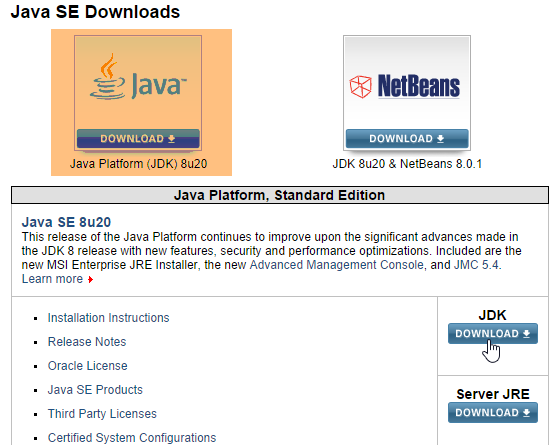 |
22.2. Installation de Maven
Maven est un outil de gestion des dépendances d'un projet Java et plus encore. Il est disponible (octobre 2014) à l'URL [http://maven.apache.org/download.cgi].
| 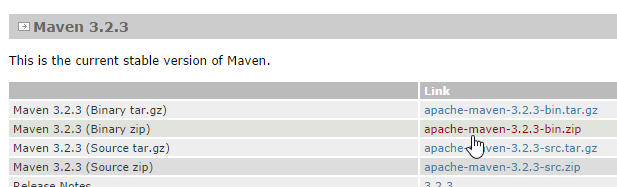 |
Téléchargez et dézippez l'archive. Nous appellerons <maven-install> le dossier d'installation de Maven.
| 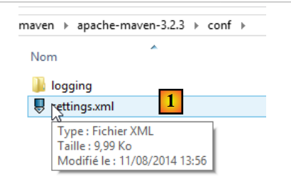 |
- en [1], le fichier [conf / settings.xml] configure Maven ;
On y trouve les lignes suivantes :
La valeur par défaut de la ligne 4 peut poser problème à certains logiciels utilisant Maven, si comme moi votre {user.home} a un espace dans son chemin (par exemple [C:\Users\Serge Tahé]). On désignera (ligne 7) un autre dossier pour le dépôt local Maven :
On évitera, ligne 7, un chemin qui contient des espaces.
22.3. Installation de STS (Spring Tool Suite)
Nous allons installer SpringSource Tool Suite [http://www.springsource.com/developer/sts] (octobre 2014), un Eclipse pré-équipé avec de nombreux plugins liés au framework Spring et également avec une configuration Maven pré-installée.
| 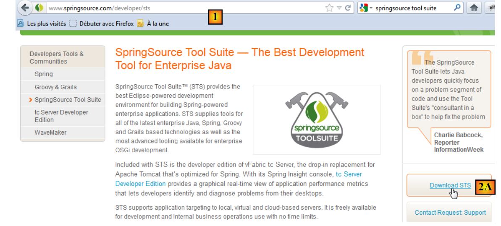 |
- aller sur le site de SpringSource Tool Suite (STS) [1], pour télécharger la version courante de STS [2A] [2B],
| 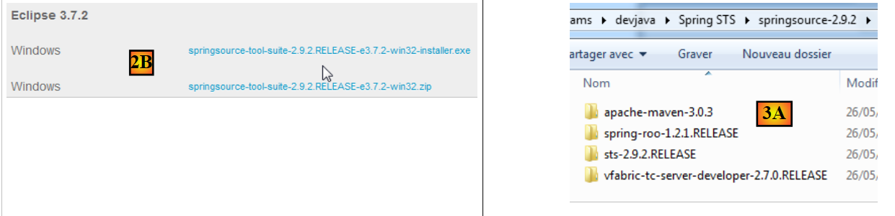 |
| 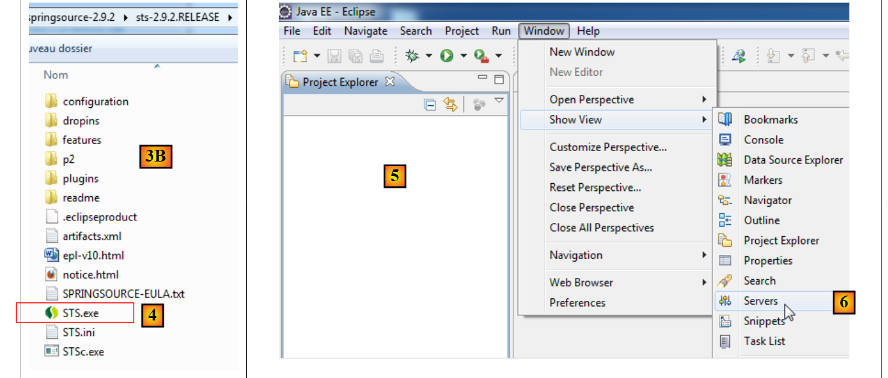 |
- le fichier téléchargé est un installateur qui crée l'arborescence de fichiers [3A] [3B]. En [4], on lance l'exécutable,
- en [5], la fenêtre de travail de l'IDE après avoir fermé la fenêtre de bienvenue. En [6], on fait afficher la fenêtre des serveurs d'applications,
| 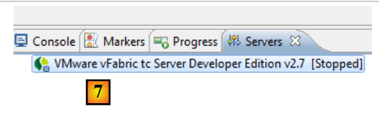 |
- en [7], la fenêtre des serveurs. Un serveur est enregistré. C'est un serveur VMware compatible Tomcat.
Il faut indiquer à STS le dossier d'installation de Maven :
| 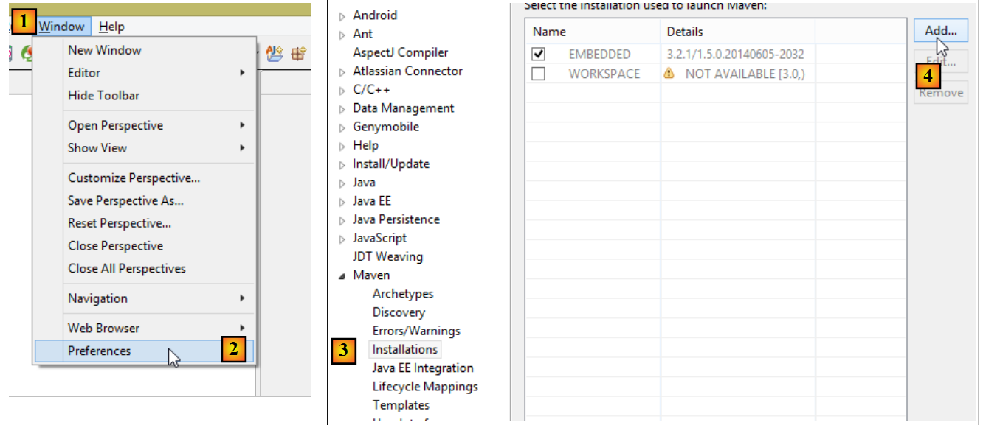 |
- en [1-2], on configure STS ;
- en [3-4], on ajoute une nouvelle installation Maven ;
| 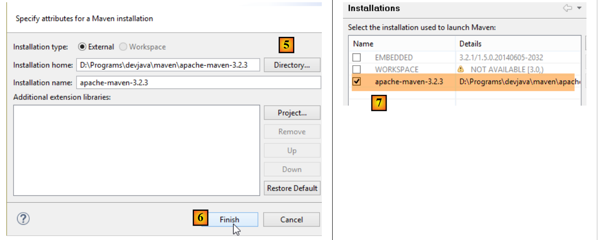 |
- en [5], on désigne le dossier d'installation de Maven ;
- en [6], on termine l'assistant ;
- en [7], on fait de la nouvelle installation Maven, l'installation par défaut ;
| 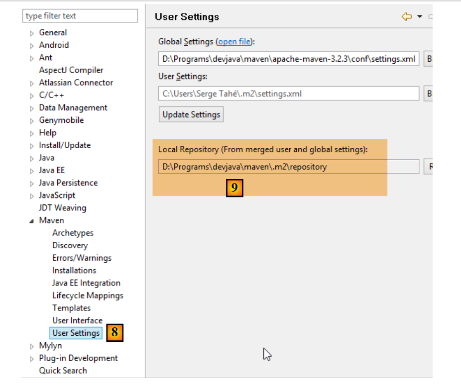 |
- en [8-9], on vérifie le dépôt local de Maven, le dossier où il mettra les dépendances qu'il téléchargera et où STS mettra les artifacts qui seront construits ;
Il faut également choisir un JDK (Java Development Kit) pour exécuter à la fois les projets Eclipse sans et avec Maven [1-5].
| 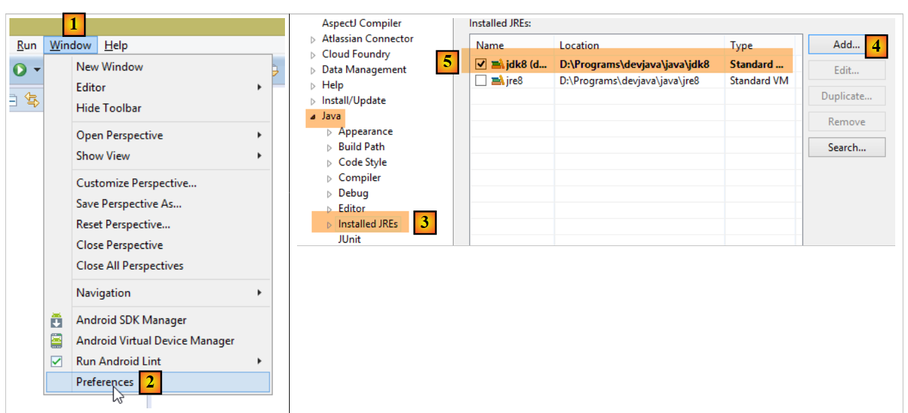 |
Avec [4], on peut ajouter des JDK (Java Development Kit) ou des JRE (Java Runtime Environment). Ce dernier sait exécuter des fichiers .class mais ne sait pas compiler les .java pour les produire. Le JDK sait faire les deux. On choisira un JDK parce que certaines opérations Maven ont besoin d'un JDK.
Pour créer un projet Eclipse, on procèdera de la façon suivante :
 |
- en [3], donnez un nom au projet ;
- en [4], désignez un dossier existant et vide ;
| 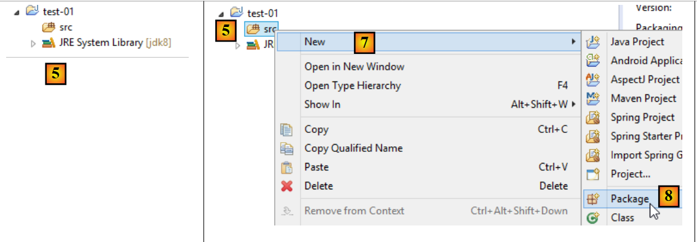 |
- en [5], le projet créé ;
- en [5-8], créez un package. Un package est un dossier qui contient du code Java. Deux classes peuvent porter le même nom si elles appartiennent à des packages différents. Dans un projet, il ne peut y avoir deux packages de même nom. Ainsi on ne peut utiliser un nom de package qui existerait dans une des dépendances du projet. Une entreprise utilisera comme nom de package, un nom précisant l'entreprise, le projet et les différentes branches de celui-ci ;
| 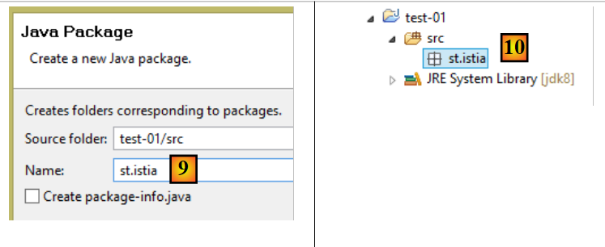 |
- en [9], donnez un nom au package ;
- en [10], le package créé ;
| 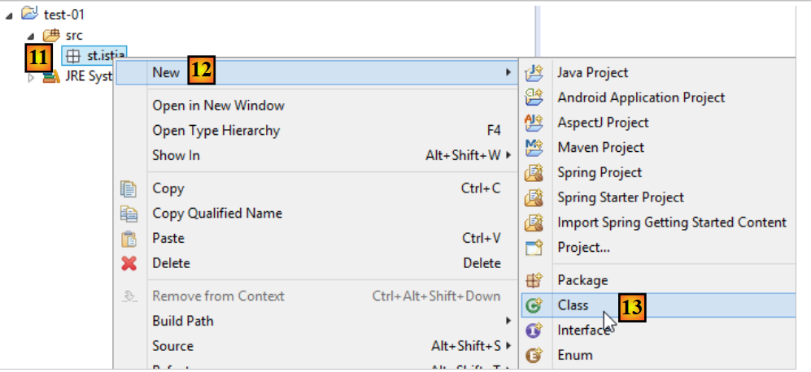 |
- en [11-13], on crée une classe dans le package qui a été créé ;
| 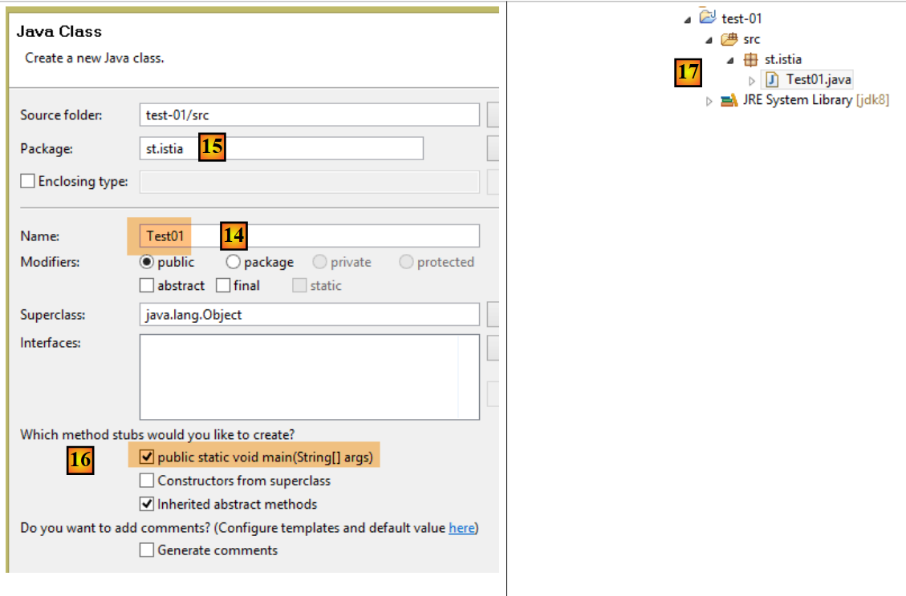 |
- en [14], donnez un nom à la classe (doit respecter la norme CamelCase - pour chaque mot du nom, commencer par une majuscule suivie de minuscules) ;
- en [15], vérifiez le package ;
- en [16], cochez la case. Elle demande à ce que la méthode statique [main] soit générée. Cette méthode rend une classe exécutable, ç-à-d la première classe à exécuter dans un projet ;
- en [17], la classe ainsi créée ;
Tapez dans la méthode [main] le code suivant qui affiche un texte sur la console :
| 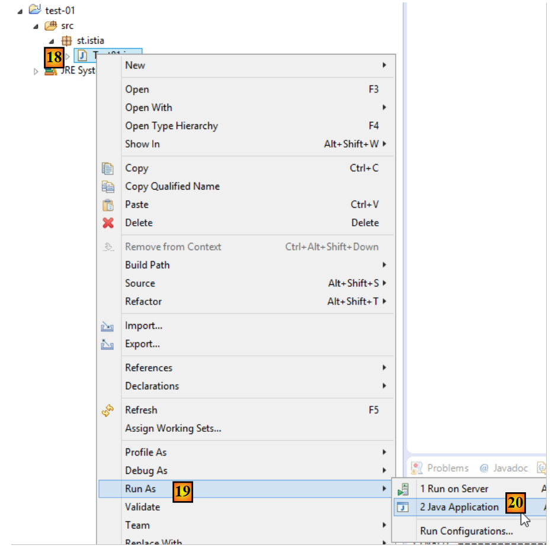 |
- en [18-20], exécutez la classe. Sa méthode [main] va alors être exécutée ;
| 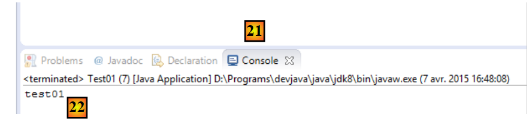 |
- en [21-22], le résultat de l'application ;
Si la vue [Console] n'est pas présente, procédez comme suit [1-4] :
| 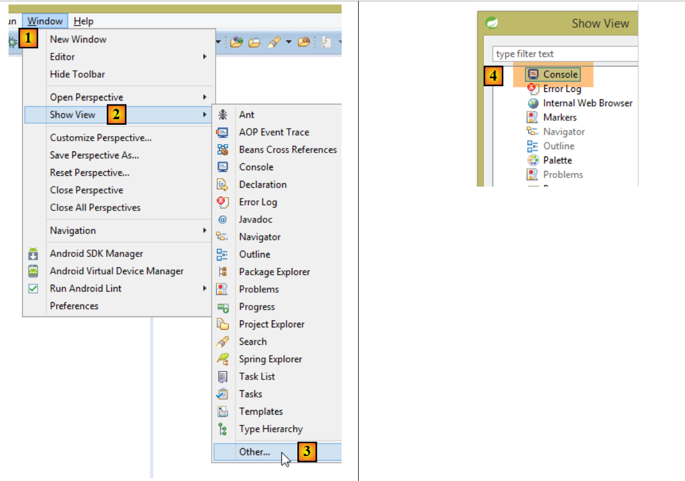 |
Il se peut qu'à l'importation d'un projet Eclipse, celui-ci présente des erreurs. Cela peut être dû à une configuration incorrecte du projet. Pour corriger l'erreur (si erreur il y a), procédez ainsi :
| 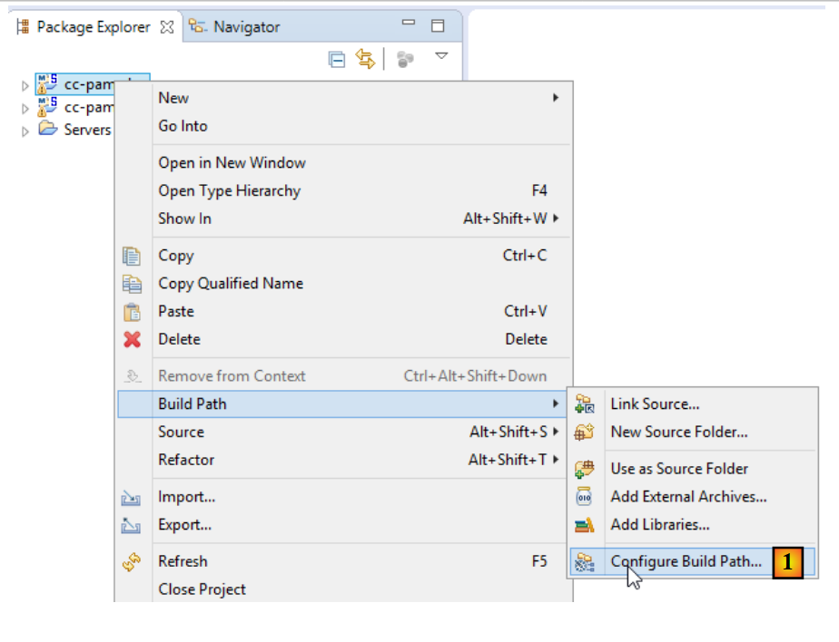 |
- en [1], modifiez le [Build Path] du projet ;
| 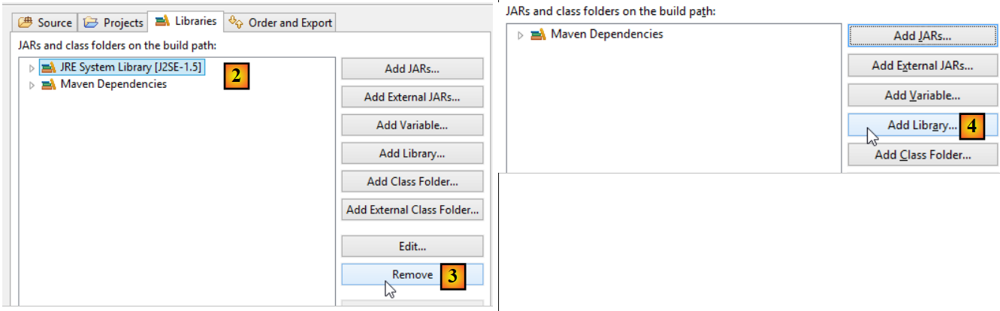 |
- en [2], le projet est configuré pour utiliser une JVM 1.5 ;
- en [3], supprimez cette dépendance ;
- en [4], ajoutez une nouvelle dépendance ;
| 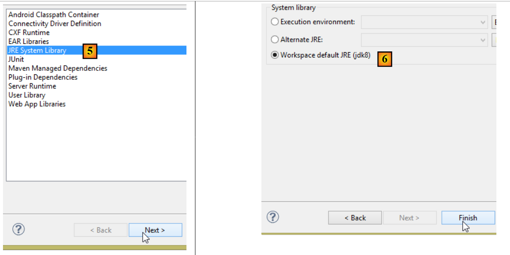 |
- en [5], on ajoute une JVM ;
- en [6], on choisit la JVM du poste ;
Ceci fait, on valide le tout puis on passe à la propriété [Java compiler] du projet [7] :
| 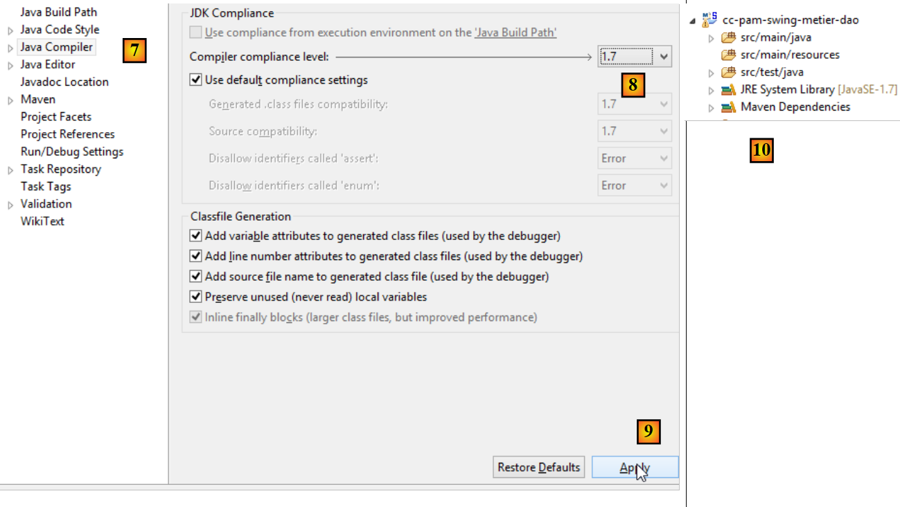 |
- en [8], on demande au compilateur d'accepter toutes les caractéristiques du langage Java jusqu'à sa version 1.7 (ou 1.8) comprise ;
- en [9], on valide ;
- en [10], le projet ainsi reconfiguré ne doit plus présenter d'erreurs ;
Par ailleurs, le projet importé peut utiliser un encodage UTF-8 des caractères. Procédez ainsi pour fixer cet encodage dans le projet importé [1-4] :
 |
Par ailleurs, il peut être utile d'inhiber la vérification orthographique dans le projet pour éviter que les commentaires en français soient soulignés comme étant incorrects. Suivez les étapes [1-4] ci-dessous :
| 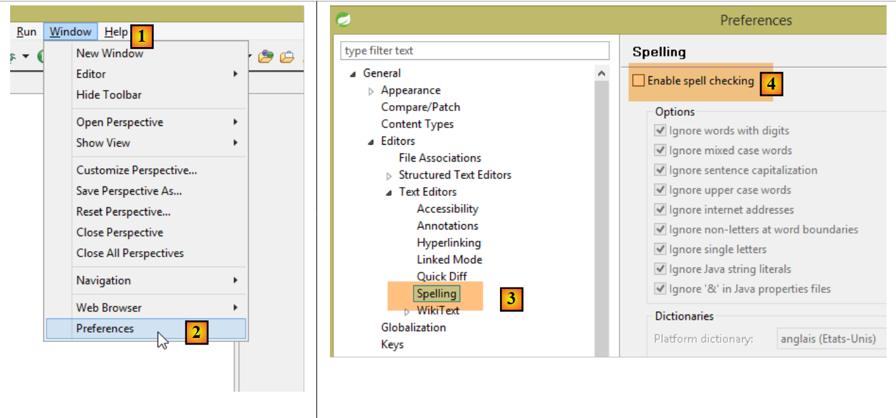 |
22.4. Installation de l'IDE Netbeans
Netbeans est disponible à l'URL [http://netbeans.org/downloads/].
| 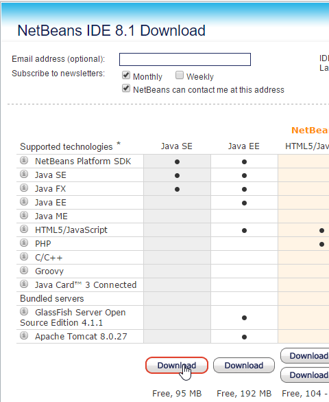 |
On pourra prendre ci-dessus, la version Java SE (Standard Edition).
22.5. Installation du plugin Chrome [Advanced Rest Client]
Dans ce document, on utilise le navigateur Chrome de Google (http://www.google.fr/intl/fr/chrome/browser/ ). On lui ajoutera l'extension [Advanced Rest Client]. On pourra procéder ainsi :
- aller sur le site de [Google Web store] (https://chrome.google.com/webstore) avec le navigateur Chrome ;
- chercher l'application [Advanced Rest Client] :
| 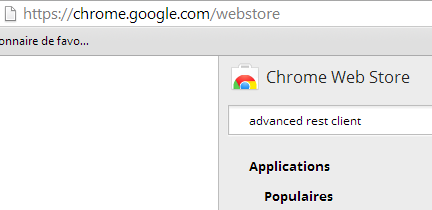 |
- l'application est alors disponible au téléchargement :
| 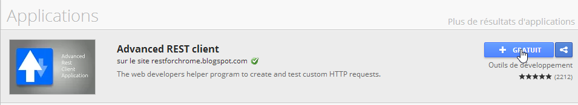 |
- pour l'obtenir, il vous faudra créer un compte Google. [Google Web Store] demande ensuite confirmation [1] :
| 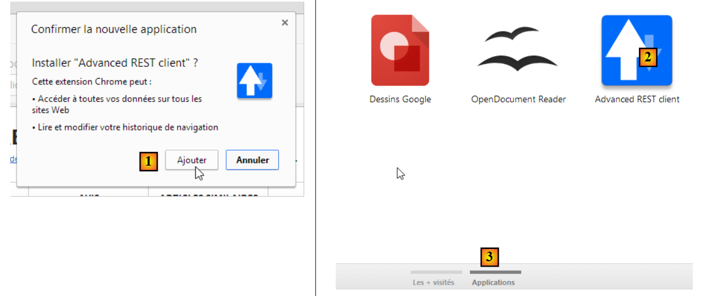 |
- en [2], l'extension ajoutée est disponible dans l'option [Applications] [3]. Cette option est affichée sur chaque nouvel onglet que vous créez (CTRL-T) dans le navigateur.
22.6. Gestion du jSON en Java
De façon transparente pour le développeur le framework [Spring MVC] utilise la bibliothèque jSON [Jackson]. Pour illustrer ce qu'est le jSON (JavaScript Object Notation), nous présentons ici un programme qui sérialise des objets en jSON et fait l'inverse en désérialisant les chaînes jSON produites pour recréer les objets initiaux.
La bibliothèque 'Jackson' permet de construire :
- la chaîne jSON d'un objet : new ObjectMapper().writeValueAsString(object) ;
- un objet à partir d'un chaîne jSON : new ObjectMapper().readValue(jsonString, Object.class).
Les deux méthodes sont susceptibles de lancer une IOException. Voici un exemple.
Le projet ci-dessus est un projet Maven avec le fichier [pom.xml] suivant ;
- lignes 12-16 : la dépendance qui amène la bibliothèque 'Jackson' ;
La classe [Personne] est la suivante :
La classe [Main] est la suivante :
L'exécution de cette classe produit l'affichage écran suivant :
De l'exemple on retiendra :
- l'objet [ObjectMapper] nécessaire aux transformations jSON / Object : ligne 11 ;
- la transformation [Personne] --> jSON : ligne 17 ;
- la transformation jSON --> [Personne] : ligne 20 ;
- l'exception [IOException] lancée par les deux méthodes : ligne 13.
22.7. Installation de [WampServer]
[WampServer] est un ensemble de logiciels pour développer en PHP / MySQL / Apache sur une machine Windows. Nous l'utiliserons uniquement pour le SGBD MySQL.
| 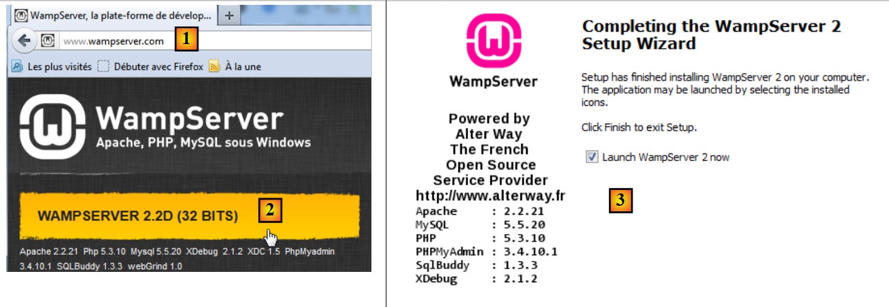 |
- sur le site de [WampServer] [1], choisir la version qui convient [2],
- l'exécutable téléchargé est un installateur. Diverses informations sont demandées au cours de l'installation. Elles ne concernent pas MySQL. On peut donc les ignorer. La fenêtre [3] s'affiche à la fin de l'installation. On lance [WampServer],
| 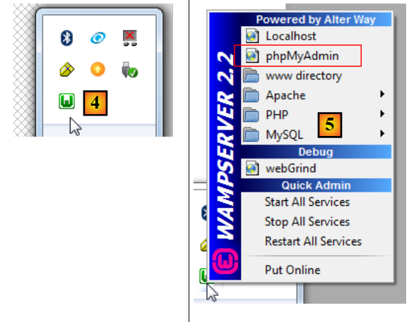 |
- en [4], l'icône de [WampServer] s'installe dans la barre des tâches en bas et à droite de l'écran [4],
- lorsqu'on clique dessus, le menu [5] s'affiche. Il permet de gérer le serveur Apache et le SGBD MySQL. Pour gérer celui-ci, on utiliser l'option [PhpPmyAdmin],
- on obtient alors la fenêtre ci-dessous,
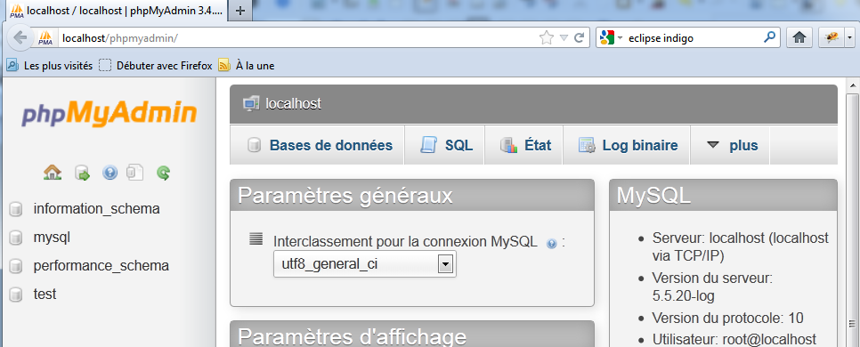
Nous donnerons peu de détails sur l'utilisation de [PhpMyAdmin]. Nous montrons au paragraphe 6.4.2, page 85, comment l'utiliser pour créer une base de données à partir d'un script SQL.